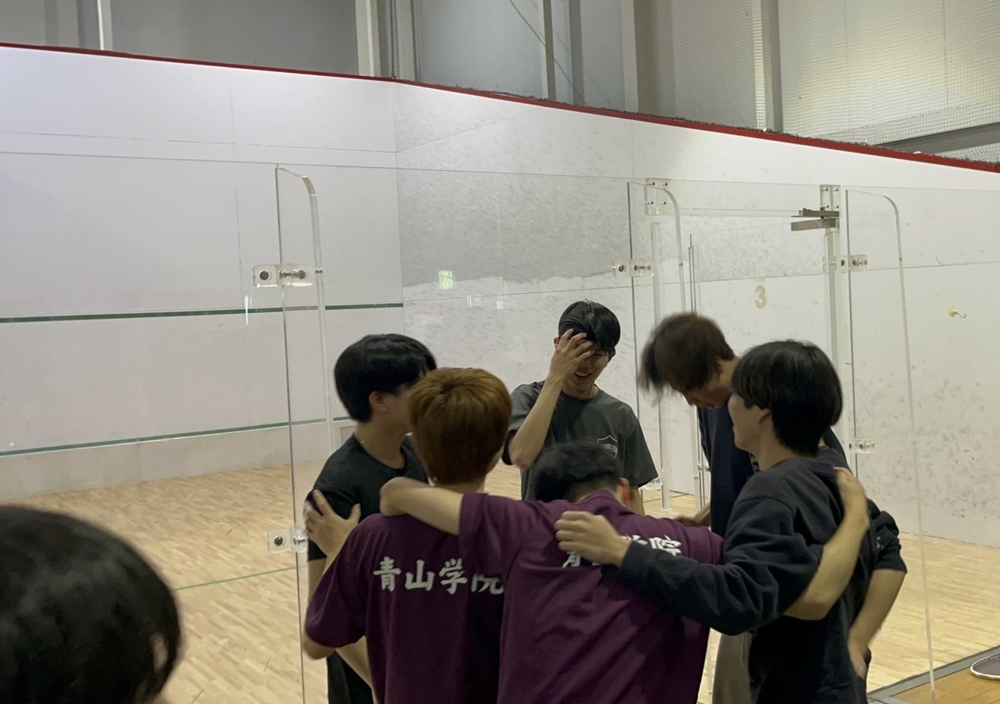

自分はどう貢献したのか
大学からスカッシュを始め、関東団体6位という成果を達成できたのは、「興味を持ったことへの深い追求力」「継続的な努力」「主体的なリーダーシップ」によるものです。スカッシュはマイナースポーツであり、指導者や練習資料が少なく、限られた練習時間や施設といった制約がありました。
私は,外部スクールでの指導内容をメモし、練習に反映。学んだ内容は動画でメンバーに共有し、上達のきっかけとなる“見える教材”を自作しました。
メンバーの悩みにも自ら声をかけ、個別に練習を提案するなど、技術力の底上げを図りました。
また、チームで勝つために必要な戦略も論理的に考えました。勝利には「相手より優れること」が不可欠であると捉え、まず対戦相手の弱点を分析。たとえば、技術は高いが体力に不安がある選手に対しては、スタミナ勝負に持ち込む戦術を練るなど、具体的な戦略を立てて試合に臨みました。このように、限られた環境でも自ら学び、考え、行動する姿勢を貫いた結果、シード最下位から他大の部活動に劇的勝利をあげるといった快挙を達成。